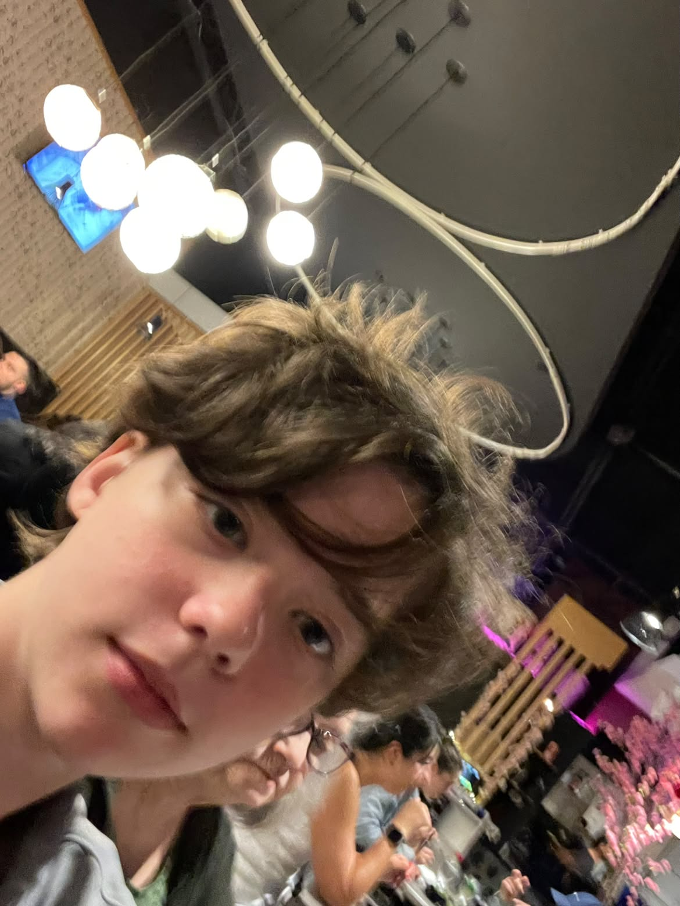
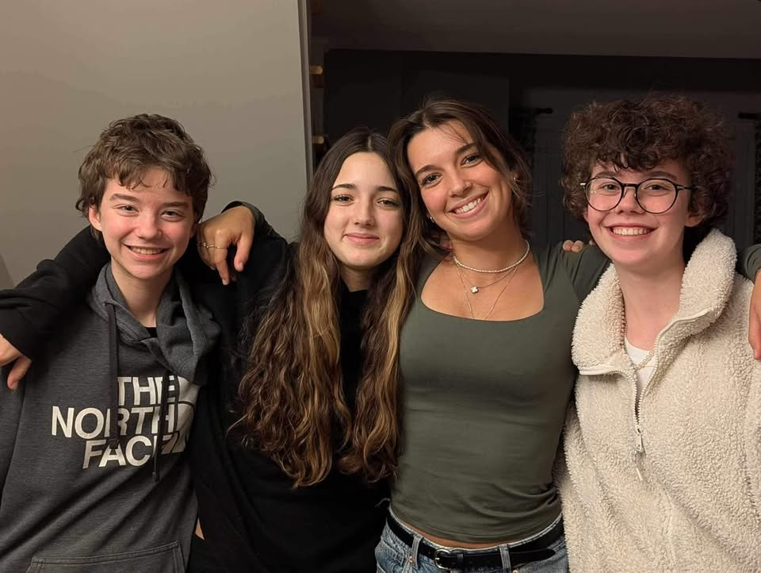

This is my family, we are a bunch of imbeciles ⋆.˚⟡ ࣪ ˖!

My family consists of my little sister Adriana, my mom Claudine, and my dad Eric. We all live under the same healthy roof, something I am so grateful about. My parents provide and wonderful life for both my sister and I. Theres always food on the table, our school is paid, my parents make sure that we are safe and we can talk freely.
As of writing, my sister is 16 years old and shes in her grumpy teenage phase, but we have our fun moments and we've grown out of that snitching phase. As much as I hate her attitude, she's still my sister and I love her
Like my dad, my mom has a very special place in my heart. I look up to her, I follow in her steps and I do everything to make her happy. I admire her as an independ woman who cherish her family and friends.
My dad is a gamer, I get it from him. I love spending time with my dad talking about nerdy stuff and laughing at stupid jokes. I look up to my dad for his great computing skills and all his skills when it comes to anything digital or wires
₊˚ ✧ ‿︵‿୨୧‿︵‿ ✧ ₊˚





As I meantioned, my cousins, aunts and uncles, grandparents and blood related family, are all very important to me.
On my dad's side of my family, me and my sister are the only kids. Regardless, my grandparents and the surrounding family are nothing but sweet and amazing people that spoil me and my sister. This side of the family is english and helped me develop my language when I was young!
On my mom's side, the french side, I have my cousins and thats all I need. Nyah is my closest cousin and we've been insperable since birth. Then theres Aleya, somebody Ive looked up to as an oldest cousin. I have another cousin, Lia, while not related by blood, she is still a cousin whom I love. They have formed a lot of my childhood and my personality, I owe everything to them
Mamily is my mom's mother, my grandmother. She recently moved only a couple of mintutes away from me and I love her with all my heart. Her and Nanny and Grumpy (dad's side) are my grandparent who love me to death and treated me with nothing but kidness and honesty.
Tati and TonTon, my aunt and uncle. Tati is my mom's sister and TonTon is not blood related, regardless he is an amazing uncle. They both support my art journey and praise me when they get the chance. I always loved spending time with them and my cousins.
The final picture is a picture of my grandfather who passed. Its a picture of me, Nyah, my sister, and Aleya, sitting on his lap. My memories of him are foggy.. sometimes I wonder how he would be like if he was still around.